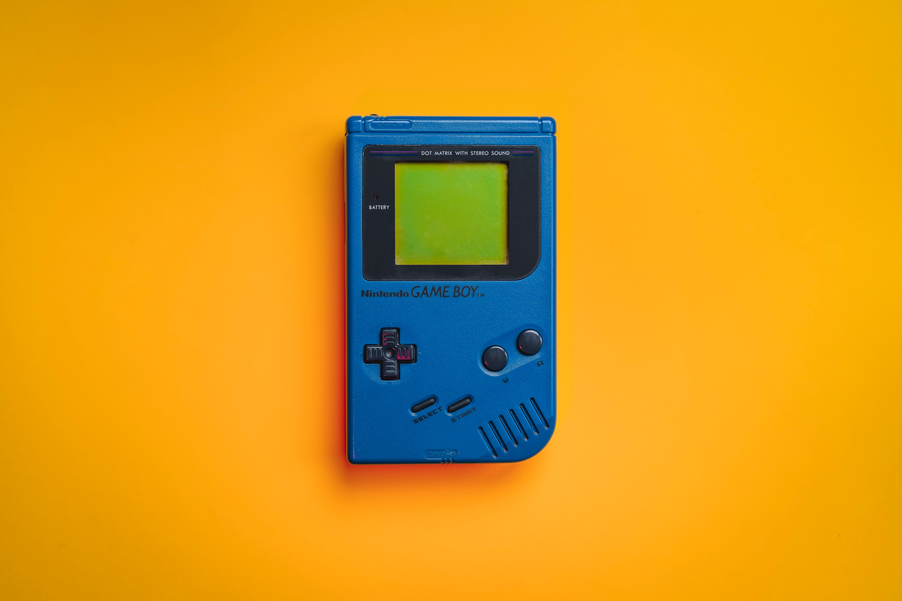
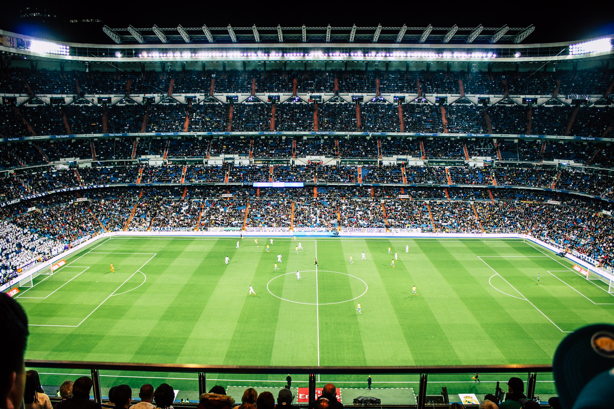

Gamers & Streamers
David RocendoVideo games have always been fun to play and watch, just the time that you play with friends and family is so satisfying and competitive. Mario kart 64 is one the best games that I used to play with my family, just the iconic rainbow road was amazing but frustrating because there was a high chance you fell off the track every turn. I like to watch people play games in my free time, for example CarToonZ, it is also entertaining when gamers play with their friends as they also have fun and raging moments. Throughout the years the gaming industry has grown a lot and even huge tournament are hold in the U.S. The gaming world was small back then and look down upon for just being for children. I am glad that today people are able to live off by playing games as it is something that they enjoy. The expansion of the gaming industry us brought many stream platforms and people that work with tech together, especially when building pc hobby and platforms like discord. Creating games have always been on my list of projects that I would love to do but I am not sure where to start. If you have any suggestions, feel free to contact me.
Futbol

Soccer For Fun
David RocendoI remember the time when I used to watch from the sidelines, where dads after work would father and play as their heart content until the sun goes down. You could hear every other kid cheering for their father as I was in my heart. I have always like futobl even though I was not good at it. Just the enjoyment of playing with my family was all I needed. As the years went by, I got a bit better at it when I joined the soccer team in our high school, I met good friends those two years and learned that teamwork makes the dream work. When in a family gathering my cousins were very competitive when playing soccer but I was there to have fun. Scoring goals with the team I picked, creating the best outcome, it excited me how my cousin would gather up and try their hardest to score on us. I was also surprised by the fact that my little brothers are able to keep up with each other three times their age. During my time in MSU I found out how fun it was watching futbol with my friends and the passion that they had for it always amazed me. I will definitely be planning to watch some games with them in the future. But I will miss playing with Gio as he was my brother. Also, if you are wondering I really don't have a favorite futbol team, but Barca teamwork in the past was crazy good, but below are teams I look forward too and last three matches this year.
| Teams and Scores | ||
|---|---|---|
| Japan | Barcalona | Manchester City |
| 2-0 | 1-2 | 3-1 |
| 4-1 | 2-1 | 2-1 |
| 4-2 | 1-0 | 0-1 |